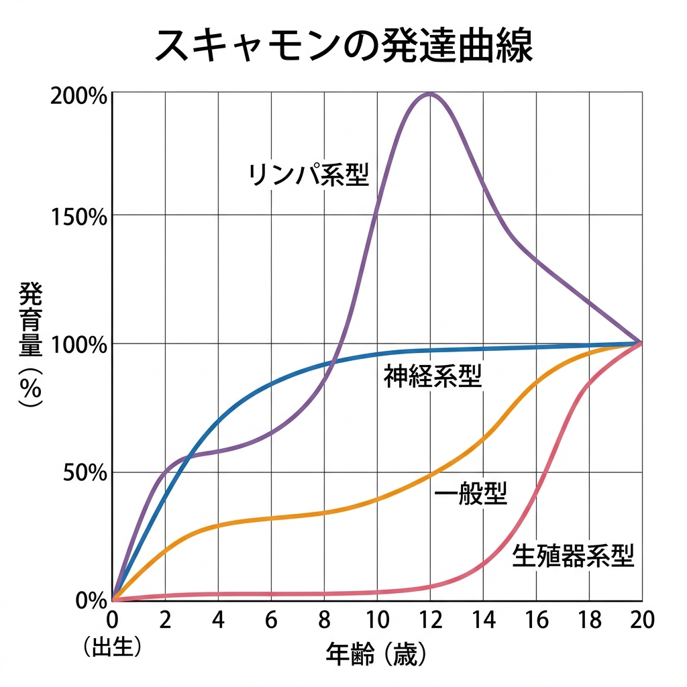
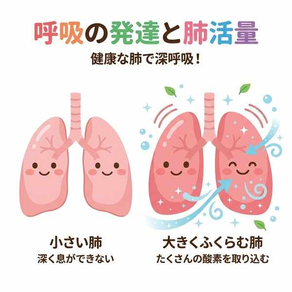
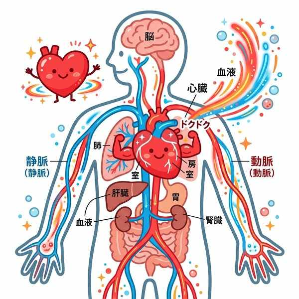
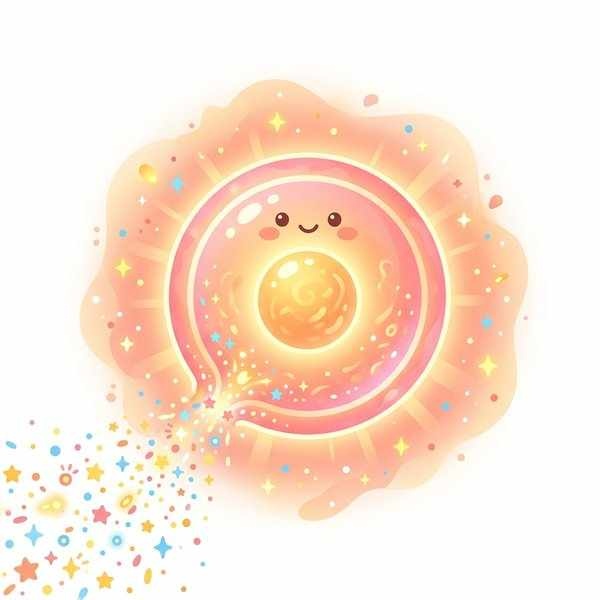
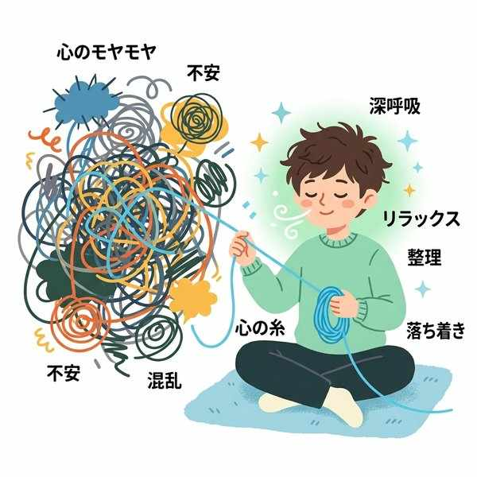

単元2: 心身の発育・発達と心の健康
思春期は、身体が急激に発達するとともに、心が大きく成長する時期です。ここでは、身体の発育パターン（スキャモンの発育曲線など）と呼吸器・循環器の変化、生殖機能の成熟、知的・情意機能の発達、そして欲求とストレスへの正しい対処法を学びます。
1. 身体の発育と発達
人間は、一生のうちに身長や体重が急激に発育する時期が2回あります。この時期を発育急進期（はついくきゅうしんき）といいます。1回目は乳幼児期、2回目は小学校高学年から高校生にかけての思春期です。この時期や程度には個人差があり、一般的には女子のほうが男子よりも早くピークを迎えます。
① スキャモンの発育曲線
体の各器官の発育パターンを20歳を100%としてグラフ化したものです。テストで非常に問われやすい分類です。
| 器官の分類型 | 発育の特徴 | 具体的な器官・組織 |
|---|---|---|
| リンパ系型 | 病原体から体を守る免疫器官。12歳頃（思春期前半）に大人のレベルを大きく超え（約2倍）、その後低下して成人のレベルになります。 | 胸腺、へんとうなど |
| 神経系型 | 幼児期までに急速に発育し、4〜6歳頃で約80%、10歳頃で大人と同じレベル（ほぼ100%）に達します。 | 大脳、脊髄、視覚器など |
| 生殖器系型 | 子どもの頃はほとんど発育せず、思春期になってから急激に発育します。 | 卵巣、精巣など |
| 一般型 （身体型） |
S字状の曲線をたどり、乳幼児期と思春期の2回、急激に伸びます。 | 身長、体重、骨、筋肉、心臓、肺など |

各器官の成長パターンを示す「スキャモンの発育曲線」
② 呼吸器・循環器の発達
- 呼吸器：呼吸器が発達すると、1回あたりの換気量や肺活量（一気に吐き出せる空気の量）は増大しますが、1分間あたりの呼吸数は少なく（減少）なります。肺の中には、毛細血管に取り囲まれた無数の小さな袋である肺胞（はいほう）があり、ここでガス交換が行われます。
- 循環器：心臓が発達すると、1回あたりの拍出量（送り出せる血液量）は増えますが、安静時の脈拍数（心拍数）は減り（減少）ます。したがって、運動習慣のある人は心臓が鍛えられているため安静時脈拍数が少なくなります（運動不足の人は安静時脈拍数が多い傾向にあります）。

肺胞でのガス交換と呼吸器の発達

心臓の発達と拍出量の変化
2. 生殖機能の成熟と妊娠の成立
思春期になると、脳の脳下垂体（のうかすいたい）から性腺刺激ホルモンが分泌され、生殖器の発達を促します。
- 女子の成熟：卵巣から成熟した卵子が外へ出される現象を排卵（はいらん）といいます。排卵に合わせて厚くなった子宮内膜が剥がれ落ち、血液とともに排出される現象を月経（げっけい）といい、初めての月経を初経（しょけい）と呼びます。月経は周期的に起こります。
- 男子の成熟：精巣で精子が作られ、分泌液と混ざった精液が体外へ放出される現象を射精（しゃせい）といい、初めての射精を精通（せいつう）と呼びます。射精は月経と違って、周期的に起こるものではありません。
- 妊娠の成立：卵管の中で精子と卵子が結びつくことを受精（じゅせい）、受精卵が子宮内膜に潜り込んで定着することを着床（ちゃくしょう）といいます。※卵子のほうが精子よりも非常に大きいです。
- 性意識：性的な欲求（性衝動）が生まれるなど、意識も変化します。お互いの心や体は一人一人異なることを理解し、尊重し合う態度が重要です。

受精と着床（妊娠の成立）のしくみ
3. 精神の発達と心の健康
心の働きは、すべて脳の大脳（だいのう）で営まれています。
- 知的機能：記憶、理解、判断、論理的思考など。
- 情意機能：喜び・怒り・悲しみなどの感情や意思。なお、基本的な感情のパターンはだいたい5歳頃までに形成されます。
- 社会性：自主性、協調性、責任感など、社会生活を送るための態度や考え方。
- 自己形成（じこけいせい）：思春期に、他人との違いを意識し、自分の長所・短所に悩みながら、自分らしい考え方や行動様式を身につけていく過程。
4. 欲求とストレスへの対処
① 欲求の分類
- 生理的欲求（一次的欲求）：睡眠欲や食欲など、生命を維持するために生まれつき持っている欲求。
- 心理的欲求（二次的欲求）：愛されたい、認められたい（承認）、目標を達成したいなど、社会生活の中で生まれる欲求。
欲求が満たされないとイライラや不安が生じます。この状態を欲求不満（よっきゅうふまん）と呼びます。また、2つ以上のやりたいこと（あるいはやりたくないこと）が重なり、どちらかを選べずに悩む状態を葛藤（かっとう）といいます。
② ストレスと心身の相関
心や体に負担（プレッシャー）がかかった状態をストレスと呼びます。心と体は密接につながっています（心身相関）。 緊張（心の状態）すると口が渇く・だ液が減る・心拍数が増える（体の反応）、逆に体の痛みや疲労（体の状態）があるとイライラして集中できなくなる（心の反応）などです。
- ストレスへの正しい対処（リラクセーション）：深呼吸やストレッチをして心身をリラックスさせる、家族や友人に相談する、趣味やスポーツで気分転換するなど。※イライラを他人にぶつけるのは不適切な方法です。

ストレスへの適切な対処（気分転換やリラクセーション）
🔥 定期テスト対策・暗記のコツ
① スキャモンの発育曲線グラフの読み取り
「リンパ系型 ➔ 12歳頃に大人の2倍に跳ね上がる」「神経系型 ➔ 幼児期に急速に発達し、10歳で100%に達する」「生殖器系型 ➔ 12歳頃までほぼゼロ、思春期に急上昇」という特徴をグラフと結びつけましょう。
② 呼吸器・循環器の発達に伴う「減少」ワード
肺や心臓が発達すると、「肺活量」や「1回拍出量」は増大しますが、安静時の「呼吸数」と「脈拍数（心拍数）」は減少します。テストでの「増える」「減る」の引っ掛け問題に注意してください。
③ 受精と着床の区別
「精子と卵子が結びつく ➔ 受精（卵管）」「受精卵が子宮内膜に潜り込む ➔ 着床（子宮）」。この順番と位置、言葉の定義の違いは穴埋め問題で定番です。